Bayesian analysis often requires integration over multiple dimensions that is
intractable both via analytic methods or standard methods of numerical
integration. However, it is often possible to compute these integrals by
simulating (drawing samples) from posterior distributions. For example, consider
the expected value of a random variable  :
:
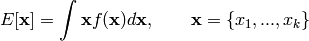
where  (the dimension of vector
(the dimension of vector  ) is perhaps very large. If we
can produce a reasonable number of random vectors 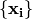, we can
use these values to approximate the unknown integral. This process is known as
Monte Carlo integration. In general, MC integration allows integrals against
probability density functions:
) is perhaps very large. If we
can produce a reasonable number of random vectors 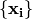, we can
use these values to approximate the unknown integral. This process is known as
Monte Carlo integration. In general, MC integration allows integrals against
probability density functions:
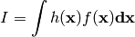
to be estimated by finite sums:

where  is a sample from
is a sample from  . This estimate is valid
and useful because:
. This estimate is valid
and useful because:
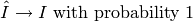
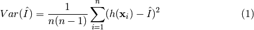
Why is this relevant to Bayesian analysis? If we replace  with a posterior,
with a posterior,  and make 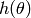 an interesting
function of the unknown parameter, the resulting expectation is that of the
posterior of :
and make 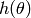 an interesting
function of the unknown parameter, the resulting expectation is that of the
posterior of :
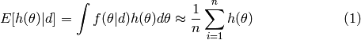
Though Monte Carlo integration allows us to estimate integrals that are unassailable by analysis and standard numerical methods, it relies on the ability to draw samples from the posterior distribution. For known parametric forms, this is not a problem; probability integral transforms or bivariate techniques (e.g Box-Muller method) may be used to obtain samples from uniform pseudo-random variates generated from a computer. Often, however, we cannot readily generate random values from non-standard posteriors. In such instances, we can use rejection sampling to generate samples.
Posit a function,  which can be evaluated for any value on the
support of 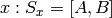, but may not be integrable or easily sampled
from. If we can calculate the maximum value of , we can then define
a rectangle that is guaranteed to contain all possible values 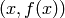.
It is then trivial to generate points over the box and enumerate the values that
fall under the curve (Figure rejection).
which can be evaluated for any value on the
support of 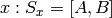, but may not be integrable or easily sampled
from. If we can calculate the maximum value of , we can then define
a rectangle that is guaranteed to contain all possible values 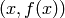.
It is then trivial to generate points over the box and enumerate the values that
fall under the curve (Figure rejection).

Rejection sampling of a bounded form. Area is estimated by the ratio of accepted (open squares) to total points, multiplied by the rectangle area.
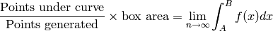
This approach is useful, for example, in estimating the normalizing constant for posterior distributions.

Rejection sampling of an unbounded form using an enveloping distribution.
If has unbounded support (i.e. infinite tails), such as a Gaussian
distribution, a bounding box is no longer appropriate. We must specify a
majorizing (or, enveloping) function, 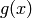, which implies:
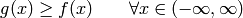
Having done this, we can now sample  from and accept
or reject each of these values based upon 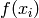. Specifically, for each
draw
from and accept
or reject each of these values based upon 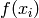. Specifically, for each
draw  , we also draw a uniform random variate 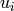 and accept
if 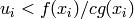, where
, we also draw a uniform random variate 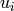 and accept
if 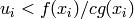, where  is a constant
(Figure unbound). This approach is made more efficient by choosing an
enveloping distribution that is “close” to the target distribution, thus
maximizing the number of accepted points. Further improvement is gained by using
optimized algorithms such as importance sampling which, as the name implies,
samples more frequently from important areas of the distribution.
is a constant
(Figure unbound). This approach is made more efficient by choosing an
enveloping distribution that is “close” to the target distribution, thus
maximizing the number of accepted points. Further improvement is gained by using
optimized algorithms such as importance sampling which, as the name implies,
samples more frequently from important areas of the distribution.
Rejection sampling is usually subject to declining performance as the dimension of the parameter space increases, so it is used less frequently than MCMC for evaluation of posterior distributions [Gamerman:1997].
A Markov chain is a special type of stochastic process. The standard definition of a stochastic process is an ordered collection of random variables:
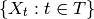
where  is frequently (but not necessarily) a time index. If we think of
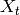 as a state
is frequently (but not necessarily) a time index. If we think of
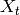 as a state  at time , and invoke the following
dependence condition on each state:
at time , and invoke the following
dependence condition on each state:
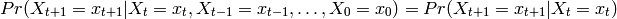
then the stochastic process is known as a Markov chain. This conditioning specifies that the future depends on the current state, but not past states. Thus, the Markov chain wanders about the state space, remembering only where it has just been in the last time step. The collection of transition probabilities is sometimes called a transition matrix when dealing with discrete states, or more generally, a transition kernel.
In the context of Markov chain Monte Carlo, it is useful to think of the Markovian property as “mild non-independence”. MCMC allows us to indirectly generate independent samples from a particular posterior distribution.
Before we move on, it is important to define some general properties of Markov chains. They are frequently encountered in the MCMC literature, and some will help us decide whether MCMC is producing a useful sample from the posterior.
Homogeneity: A Markov chain is homogeneous at step if the
transition probabilities are independent of time .
Irreducibility: A Markov chain is irreducible if every state is accessible
in one or more steps from any other state. That is, the chain contains no
absorbing states. This implies that there is a non-zero probability of
eventually reaching state from any other state in the chain.
Recurrence: States which are visited repeatedly are recurrent. If the expected time to return to a particular state is bounded, this is known as positive recurrence, otherwise the recurrent state is null recurrent. Further, a chain is Harris recurrent when it visits all states 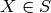 infinitely often in the limit as 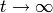; this is an important characteristic when dealing with unbounded, continuous state spaces. Whenever a chain ends up in a closed, irreducible set of Harris recurrent states, it stays there forever and visits every state with probability one.
Stationarity: A stationary Markov chain produces the same marginal
distribution when multiplied by the transition kernel. Thus, if  is
some 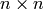 transition matrix:
is
some 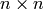 transition matrix:
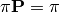
for Markov chain  . Thus, is no longer subscripted, and is
referred to as the limiting distribution of the chain. In MCMC, the chain
explores the state space according to its limiting marginal distribution.
. Thus, is no longer subscripted, and is
referred to as the limiting distribution of the chain. In MCMC, the chain
explores the state space according to its limiting marginal distribution.
Ergodicity: Ergodicity is an emergent property of Markov chains which are irreducible, positive Harris recurrent and aperiodic. Ergodicity is defined as:
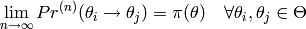
or in words, after many steps the marginal distribution of the chain is the same at one step as at all other steps. This implies that our Markov chain, which we recall is dependent, can generate samples that are independent if we wait long enough between samples. If it means anything to you, ergodicity is the analogue of the strong law of large numbers for Markov chains. For example, take values 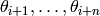 from a chain that has reached an ergodic state. A statistic of interest can then be estimated by:
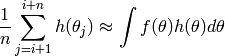
Markov chain Monte Carlo simulates a Markov chain for which some function of interest (e.g. the joint distribution of the parameters of some model) is the unique, invariant limiting distribution. An invariant distribution with respect to some Markov chain with transition kernel 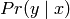 implies that:
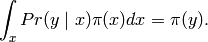
Invariance is guaranteed for any reversible Markov chain. Consider a Markov chain in reverse sequence: 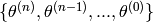. This sequence is still Markovian, because:
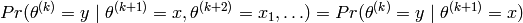
Forward and reverse transition probabilities may be related through Bayes theorem:

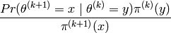
Though not homogeneous in general, becomes homogeneous if Do you
ever call the stationary distribution itself homogeneous?:
 for some 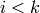 **Is it meant to be
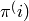, and **
for some 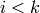 **Is it meant to be
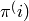, and **If this chain is homogeneous it is called reversible, because it satisfies the detailed balance equation:
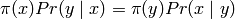
Reversibility is important because it has the effect of balancing movement
through the entire state space. When a Markov chain is reversible,
is the unique, invariant, stationary distribution of that chain. Hence, if
is of interest, we need only find the reversible Markov chain for
which is the limiting distribution. This is what MCMC does!
The Gibbs sampler is the simplest and most prevalent MCMC algorithm. If a
posterior has parameters to be estimated, we may condition each
parameter on current values of the other  parameters, and sample from
the resultant distributional form (usually easier), and repeat this operation on
the other parameters in turn. This procedure generates samples from the
posterior distribution. Note that we have now combined Markov chains
(conditional independence) and Monte Carlo techniques (estimation by simulation)
to yield Markov chain Monte Carlo.
parameters, and sample from
the resultant distributional form (usually easier), and repeat this operation on
the other parameters in turn. This procedure generates samples from the
posterior distribution. Note that we have now combined Markov chains
(conditional independence) and Monte Carlo techniques (estimation by simulation)
to yield Markov chain Monte Carlo.
Here is a stereotypical Gibbs sampling algorithm:
As we can see from the algorithm, each distribution is conditioned on the last iteration of its chain values, constituting a Markov chain as advertised. The Gibbs sampler has all of the important properties outlined in the previous section: it is aperiodic, homogeneous and ergodic. Once the sampler converges, all subsequent samples are from the target distribution. This convergence occurs at a geometric rate.
Choose starting values for states (parameters): 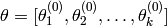
Initialize counter 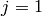
Draw the following values from each of the conditional distributions:
![\begin{eqnarray*}
\theta_1^{(j)} &\sim& \pi(\theta_1 | \theta_2^{(j-1)},\theta_3^{(j-1)},\ldots,\theta_{k-1}^{(j-1)},\theta_k^{(j-1)}) \\
\theta_2^{(j)} &\sim& \pi(\theta_2 | \theta_1^{(j)},\theta_3^{(j-1)},\ldots,\theta_{k-1}^{(j-1)},\theta_k^{(j-1)}) \\
\theta_3^{(j)} &\sim& \pi(\theta_3 | \theta_1^{(j)},\theta_2^{(j)},\ldots,\theta_{k-1}^{(j-1)},\theta_k^{(j-1)}) \\
\vdots \\
\theta_{k-1}^{(j)} &\sim& \pi(\theta_{k-1} | \theta_1^{(j)},\theta_2^{(j)},\ldots,\theta_{k-2}^{(j)},\theta_k^{(j-1)}) \\
\theta_k^{(j)} &\sim& \pi(\theta_k | \theta_1^{(j)},\theta_2^{(j)},\theta_4^{(j)},\ldots,\theta_{k-2}^{(j)},\theta_{k-1}^{(j)})
\end{eqnarray*}](_images/math/d6e1213357c7b621e7e64f9c1b561e3b911833e6.png)
Increment  and repeat until convergence occurs.
and repeat until convergence occurs.
The key to success in applying the Gibbs sampler to the estimation of Bayesian
posteriors is being able to specify the form of the complete conditionals of
 . In fact, the algorithm cannot be implemented without them.
Of course, the posterior conditionals cannot always be neatly specified. In
contrast to the Gibbs algorithm, the Metropolis-Hastings algorithm generates
candidate state transitions from an alternate distribution, and accepts or
rejects each candidate probabilistically.
. In fact, the algorithm cannot be implemented without them.
Of course, the posterior conditionals cannot always be neatly specified. In
contrast to the Gibbs algorithm, the Metropolis-Hastings algorithm generates
candidate state transitions from an alternate distribution, and accepts or
rejects each candidate probabilistically.
Let us first consider a simple Metropolis-Hastings algorithm for a single
parameter,  . We will use a standard sampling distribution,
referred to as the proposal distribution, to produce candidate variables
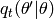. That is, the generated value,
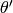, is a possible next value for at step
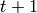. We also need to be able to calculate the probability of moving back
to the original value from the candidate, or
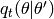. These probabilistic ingredients are used
to define an acceptance ratio:
. We will use a standard sampling distribution,
referred to as the proposal distribution, to produce candidate variables
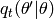. That is, the generated value,
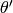, is a possible next value for at step
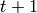. We also need to be able to calculate the probability of moving back
to the original value from the candidate, or
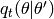. These probabilistic ingredients are used
to define an acceptance ratio:
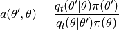
The value of  is then determined by:
is then determined by:
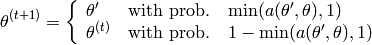
This transition kernel implies that movement is not guaranteed at every step. It only occurs if the suggested transition is likely based on the acceptance ratio.
A single iteration of the Metropolis-Hastings algorithm proceeds as follows:
The original form of the algorithm specified by Metropolis required that 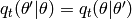, which reduces 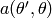 to 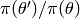, but this is not necessary. In either case, the state moves to high-density points in the distribution with high probability, and to low-density points with low probability. After convergence, the Metropolis-Hastings algorithm describes the full target posterior density, so all points are recurrent.
 .
.A practical implementation of the Metropolis-Hastings algorithm makes use of a random-walk proposal. Recall that a random walk is a Markov chain that evolves according to:
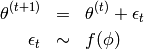
As applied to the MCMC sampling, the random walk is used as a proposal distribution, whereby dependent proposals are generated according to:
Generally, the density generating is symmetric about zero, resulting in a symmetric chain. Chain symmetry implies that , which reduces the Metropolis-Hastings acceptance ratio to:
The choice of the random walk distribution for is frequently
a normal or Student’s density, but it may be any distribution that
generates an irreducible proposal chain.
An important consideration is the specification of the scale parameter for the random walk error distribution. Large values produce random walk steps that are highly exploratory, but tend to produce proposal values in the tails of the target distribution, potentially resulting in very small acceptance rates. Conversely, small values tend to be accepted more frequently, since they tend to produce proposals close to the current parameter value, but may result in chains that mix very slowly. Some simulation studies suggest optimal acceptance rates in the range of 20-50%. It is often worthwhile to optimize the proposal variance by iteratively adjusting its value, according to observed acceptance rates early in the MCMC simulation [Gamerman:1997].